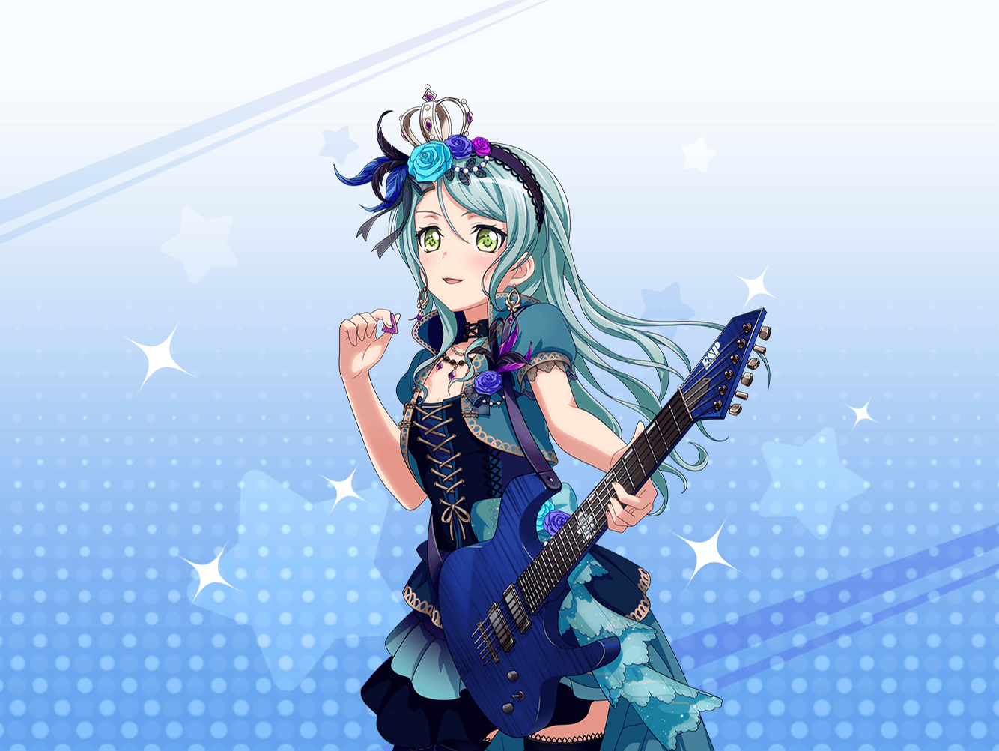

江戸川楽器店
紗夜
あ、こんにちは、{{userName}}さん
紗夜
……私ですか？
私は、ここで考えごとを……
紗夜
……はい。
ここの空気がとても好きなので
紗夜
私にとって、とても集中できる場所なんです
紗夜
……ええ。
私が考えていたのは、Roseliaの新しい衣装のことです
紗夜
Roseliaの音楽性を、もっと高めるためには
どんな衣装が最も適しているのか……
紗夜
私達の音楽にはどんな衣装が相応しいのか……
紗夜
ずっとそのことを考えていました
紗夜
……いえ。
熱心だなんて……
紗夜
そんなに私のことを買いかぶらないでください。
決してそんなことありません
紗夜
ただ、私にはこれしかないから……
紗夜
だからこうやってRoseliaのことを考えていると、
心が落ち着くんです
紗夜
安心できる、自分の居場所……
紗夜
そんな感じですね
紗夜
……ふふ。
確かに、私にとってのRoseliaと、
{{userName}}さんにとってのCiRCLE……
紗夜
2つは、とても似ているのかもしれませんね
紗夜
もし、{{userName}}さんが何か思いついたら
ぜひ教えてください
紗夜
{{userName}}さんの意見は、
ぜひ参考にさせていただきたいので
紗夜
それでは、よろしくお願いします